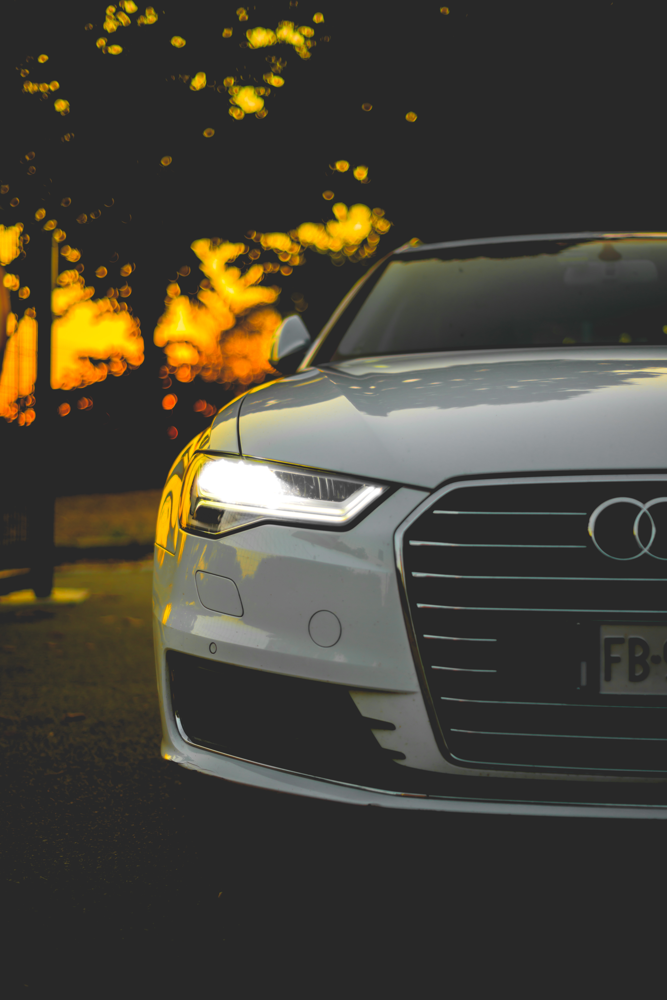

A connected car is a car that is equipped with Internet access, and usually also with a wireless local area network.
This allows the car to share internet access with other devices both inside as well as outside the vehicle. Often, the car is also outfitted with special technologies that tap into the internet or wireless LAN and provide additional benefits to the driver.For safety-critical applications, it is anticipated that cars will also be connected using Dedicated Short Range Communication (DSRC) radios, operating in the FCC-granted 5.9 GHz band with very low latency.